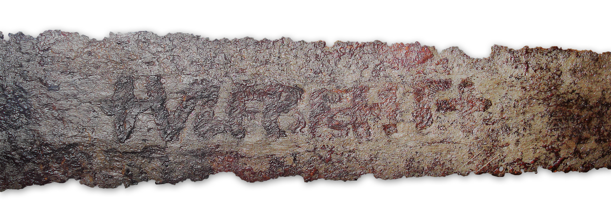
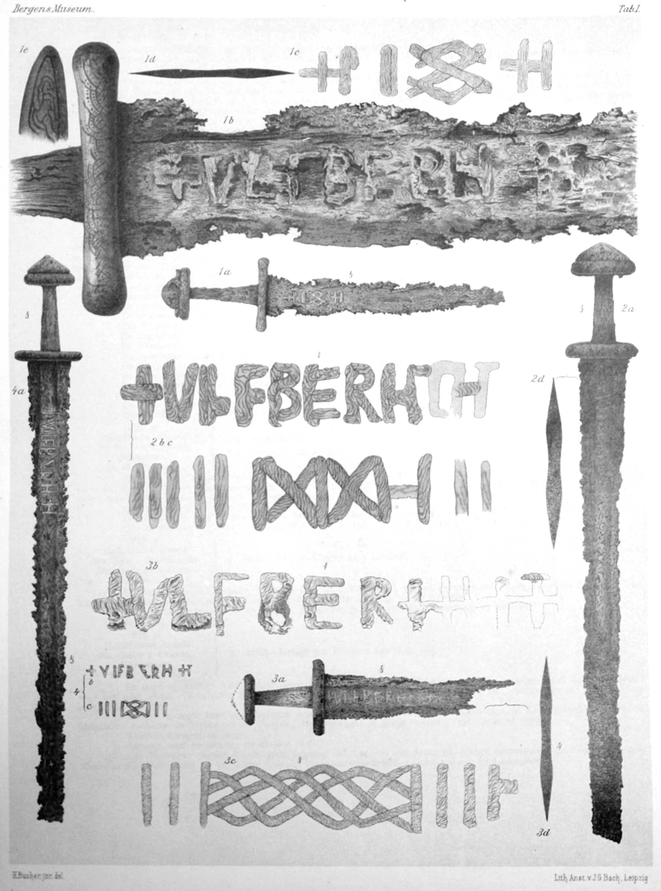
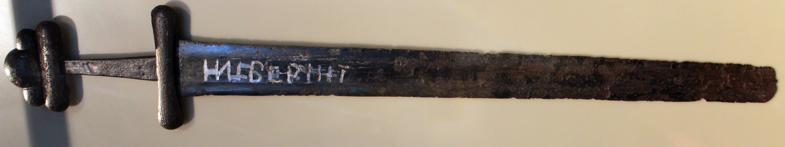
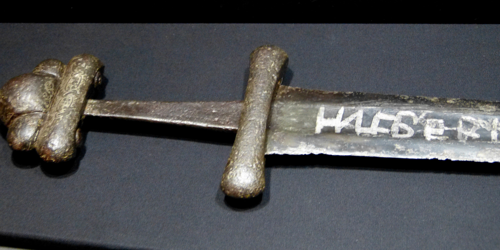
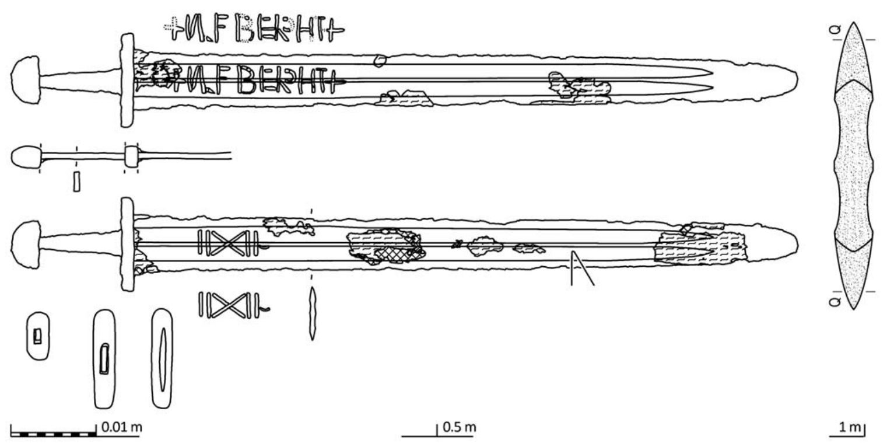
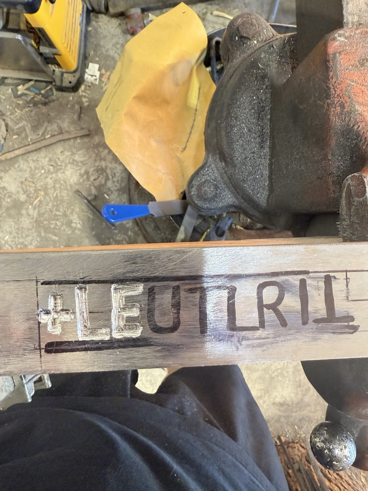
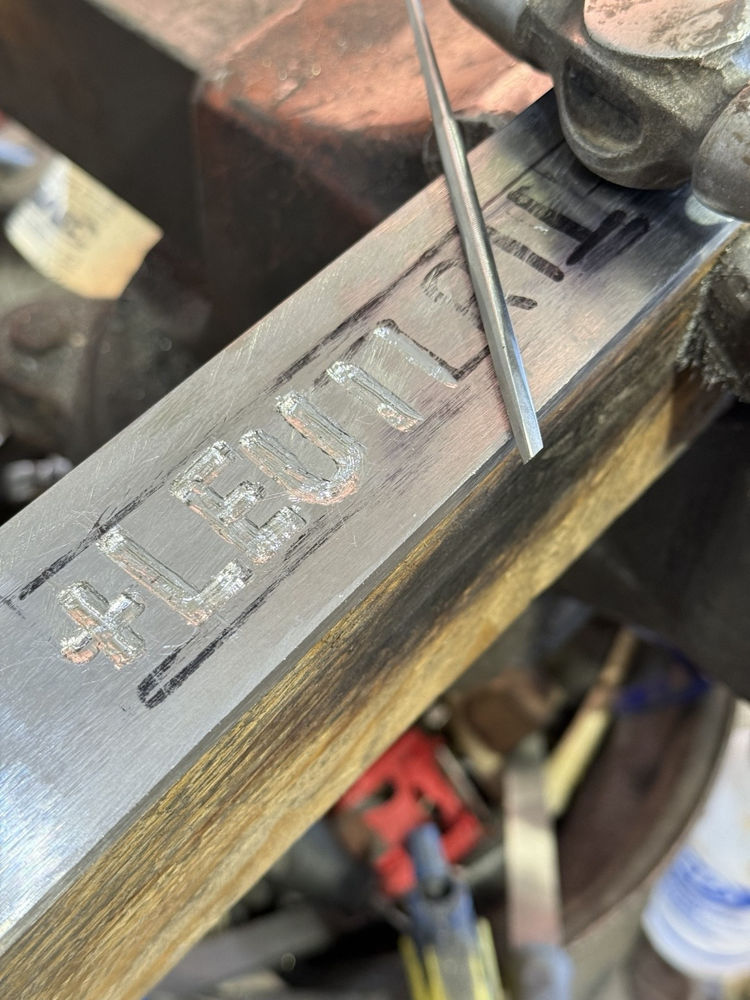

Introduction
Most of us have heard of VLFBERHT swords. They've become pretty legendary among people interested in the Viking Age. If you spend enough time reading about them, you'd almost think they were magical weapons, far ahead of anything other smiths of the period could make.
As a bladesmith, the idea of smiths working with this almost magical steel over a thousand years ago fascinated me. I wanted to understand what made these swords so special and how they were made. But the more I researched them, the more I realized that they weren't all made the same way.
Some were made with relatively high-carbon steel, while others had layered cores with separately welded cutting edges. Even the inscriptions weren't always the same. Sometimes the difference was something as simple as the placement of a cross.
And that's what got me thinking.
Could those differences tell us something about the smiths who made them? Were certain inscriptions connected to particular construction methods or workshops? Or are we looking for patterns that aren't really there?
That's what I want to explore in this paper. Not just whether VLFBERHT swords deserve their legendary reputation, but what the surviving examples and archaeological research can actually tell us about how they were made.


1. The VLFBERHT Swords


The name VLFBERHT appears on sword blades dating primarily from the ninth and tenth centuries. The name is generally considered to be of Frankish origin, and Petri (2019) argues that these blades were probably made somewhere within the Frankish Empire.
Interestingly, most surviving examples weren't discovered in Frankish territory. They've been found throughout Scandinavia, particularly Norway, along with the Baltic region and areas associated with early Rus.
You may think these swords were made where most of them have been found, but it's not that easy.
One important factor is how different cultures buried their dead. In parts of Scandinavia, it was common to bury someone with their weapons and other possessions. In much of the Christian Frankish Empire, that practice had largely disappeared. As a result, many swords in Scandinavia survived in graves, while finds from Frankish territory often come from rivers (Petri, 2019, pp. 2–3).
So finding more VLFBERHT swords in Scandinavia doesn't necessarily mean they were made there.
Petri (2019) reports that Anne Stalsberg collected information on 166 VLFBERHT blades from 23 European countries. Her research also examined their dating and distribution, showing that the surviving examples span different periods of the Viking Age rather than being confined to a single generation.
Dating these swords presents another challenge. A sword blade and its hilt weren't necessarily made at the same time. An older blade could have been fitted with a newer hilt, making it difficult to determine when the original blade was forged.
Based on the blade typology and archaeological evidence reviewed by Petri (2019), VLFBERHT blades were probably made from around AD 800 through the late tenth century, although some remained in use into the eleventh century.
That leaves us with two important questions. Where were these swords actually made, and how did they end up across such a large geographical area?
Petri (2019, p. 3) also discusses how the swords might have reached Scandinavia. Stalsberg suggested that many could have arrived as loot or ransom rather than through extensive trade. However, we don't have enough evidence to establish exactly how individual swords traveled from one region to another.
The Frankish origin of the name and the archaeological evidence support the possibility that many of these blades were made in Frankish territory. Metallurgical studies also suggest that European steel production methods could account for the materials found in examined swords, although they haven't established a specific Frankish source for the steel.
For the purpose of this paper, it's important to remember that where a sword was found doesn't necessarily tell us where its blade was made.
2. The Inscriptions and Their Variations


One of the most recognizable features of VLFBERHT swords is the name inlaid into the blade. While the name itself is generally consistent, the placement of the crosses and even the spelling can vary between swords.
According to Petri (2019, pp. 3–4), Anne Stalsberg identified two major versions of the inscription:
Variant 1: +VLFBERH+T
Variant 2: +VLFBERHT+
At first glance, the only real difference is the location of the second cross. But could something that simple tell us more about the smiths who made these swords?
There are also examples with missing letters, additional letters, or inscriptions that barely resemble the original name. Some researchers have suggested these could be copies made to take advantage of the reputation associated with VLFBERHT swords.
But an incorrectly spelled inscription doesn't automatically mean the sword was a counterfeit.
The surviving letters are often damaged by corrosion, making them difficult to read. It's also possible that mistakes occurred while the smith was assembling and forge welding the individual strokes of the letters (Petri, 2019, pp. 4–5).
Who was VLFBERHT?
Before we can answer that, what does the name actually mean?
VLFBERHT is generally understood as a Germanic personal name made up of two parts. VLF or ULF means "wolf," while BERHT means "bright" or "shining." You may see the name interpreted as "Bright Wolf" or "Shining Wolf," although these are loose interpretations of the name's individual parts.
But who did the name actually belong to?
Researchers have suggested it could have identified an individual smith, someone overseeing the making of swords, or a name that continued to be used by different workshops.
Stalsberg also proposed a possible connection to the Christian Church. She suggested that the crosses surrounding the name might indicate someone who held a position within the Church, possibly connected to a monastery. Petri (2019, pp. 4–5) discusses this interpretation alongside other explanations.
But we don't have enough evidence to confidently identify the original VLFBERHT or the workshop responsible for these swords.
The marks on the reverse
The name wasn't the only decoration found on these blades.
Many VLFBERHT swords also have geometric marks on the opposite face. These often consist of vertical bars, crosses, and diamond-shaped patterns.
Their meaning is still debated.
Some researchers have interpreted them as workshop marks or indications of the blade's quality. Others have suggested they may have carried religious or symbolic meanings, possibly connected to earlier serpent designs (Petri, 2019, pp. 5–6).
What interests me is whether these marks, combined with the different spellings, could help us identify recurring patterns between swords.
If several blades shared the same inscription, similar geometric marks, and similar construction methods, would that suggest they came from the same workshop? Or could those similarities simply reflect techniques and traditions shared by different smiths?
That's one of the questions we'll return to when we examine the metallurgical evidence.
3. Blade Construction and Materials


The VLFBERHT inscription alone doesn't tell us exactly how a sword was made. When researchers began examining the steel, they found that these blades weren't all constructed the same way.
To understand these differences, we first need to look at how iron and steel were produced during the period.
Much of the iron used in early medieval Europe came from bloomeries. Unlike modern steelmaking, the iron wasn't completely melted during this process. Instead, the furnace produced a bloom that could contain slag, areas with different carbon contents, and other impurities.
Smiths had to refine that material before using it. This involved heating, hammering, folding, and forge welding the iron or steel together. Smaller pieces could also be sorted, stacked, and forge welded into larger billets. This process could leave visible layers and weld lines in the finished material (Petri, 2019, pp. 7–8).
Piled and Composite Construction
Some blades were made by stacking layers of iron or steel and forge welding them into a single billet. This is generally referred to as piled construction. The layers could contain similar material or steels with different carbon contents.
Other swords used composite construction, where different materials were placed in particular parts of the blade.
One example is a sword with a lower-carbon core and separately welded higher-carbon cutting edges. The higher-carbon steel could be hardened to produce a more durable cutting edge, while the lower-carbon core could provide a tougher body capable of absorbing impacts.
There are advantages to this construction, but it also requires additional forge welds. The quality of those welds and the blade's heat treatment would have played an important role in how well the finished sword performed.
And not every blade with separately welded edges necessarily used different grades of steel.
Piled construction and composite construction are not opposites. A smith could pile several pieces into a core, then weld separate cutting edges onto it.
What the Metallurgical Evidence Shows
In his study of swords from Finland, Mikko Moilanen (2015, pp. 71–74) examined several blades with separately welded cutting edges.
One VLFBERHT sword, identified as KM 2548:277, had a layered core with two separately welded cutting edges. The average hardness of the examined cutting edges was 644 HV on the Vickers hardness scale, while the innermost parts of the core averaged 264 HV.
The examination also identified differences in the carbon content and hardness of the various layers. The cutting edges showed evidence of hardening, while the core was considerably softer.
Another VLFBERHT sword, KM 9164:3, was constructed with a layered core and separately welded cutting edges. Interestingly, Moilanen found that the different parts appeared to consist of similar high-carbon material. The average hardness of the examined core was 355 HV, compared with 363 HV for the cutting edges.
So even when two swords share a similar construction method, that doesn't necessarily mean they were made from the same combination of materials.
Piled Steel and Pattern Welding
There's also an important distinction between piled construction and pattern welding.
Piled construction involves forge welding layers or pieces of material together. Pattern welding generally involves arranging, and sometimes twisting, bars of different materials to produce a visible pattern in the finished steel.
While some early medieval swords had pattern-welded blades, that doesn't mean every VLFBERHT sword was made this way.
In fact, on many VLFBERHT swords, the pattern-welded material was used for the lettering and geometric marks rather than the blade itself (Petri, 2019, pp. 3–4).
That distinction matters because the decoration we see on the surface doesn't necessarily tell us how the steel underneath was constructed.
What Can We Learn From the Steel?
Metallurgical examinations can reveal differences in carbon content, hardness, microstructure, and the presence of forge welds. These findings help researchers understand how the examined parts of a blade were made and how they may have been heat treated.
However, examining a small sample doesn't necessarily reveal the construction of an entire sword. This is one of the limitations raised by Astrup and Martens (2011) in their criticism of Williams' earlier research.
The evidence shows that VLFBERHT swords could be made using different materials and construction methods. What it doesn't always tell us is why a particular smith chose one method over another.
4. The Crucible Steel Debate
One of the biggest claims surrounding VLFBERHT swords is that some were made from crucible steel imported from Asia.
It's an interesting theory, especially when you consider the amount of work involved in producing steel during the Viking Age. But what evidence do we actually have to support it?
What Is Crucible Steel?
Unlike bloomery steel, which was produced without completely melting the iron, crucible steel was made by heating iron and carbon-bearing material inside a sealed container until molten or partly molten steel could form.
This process could produce steel with a relatively consistent carbon content and very few slag inclusions.
That doesn't automatically make it better steel. Carbon content, impurities, and heat treatment all play a role in how a finished blade performs.
Williams' Research
In 2009, Alan Williams published A Metallurgical Study of Some Viking Swords, examining 44 VLFBERHT sword specimens along with other Viking Age swords.
Williams found that some blades, particularly those bearing the +VLFBERH+T inscription, contained high-carbon steel with very few slag inclusions.
Based on these findings, along with the absence of visible forge welds in the examined samples, Williams proposed that some VLFBERHT swords were made from crucible steel imported from Asia, possibly through trade routes connecting Central Asia to Scandinavia (Williams, 2009, 2012).
If correct, this would suggest that some of these swords were made using steel produced far outside the regions where they were eventually found.
However, high carbon content and relatively clean steel don't necessarily prove that the material came from a crucible.
Challenges to Williams' Interpretation
In 2011, Eva Elisabeth Astrup and Irmelin Martens published a response to Williams' research.
One of their main concerns was the size and location of the samples used in his analysis.
When examining a sword, a sample taken from the cutting edge can tell us quite a bit about that particular area. But it doesn't necessarily tell us how the rest of the blade was constructed.
For example, a sword could have a high-carbon steel cutting edge welded to a lower-carbon core. Examining only the edge might not reveal that construction.
Astrup and Martens argued that larger cross-sections, or samples covering both the edge and core, were needed to properly understand the construction of these swords.
Williams responded that removing large sections from surviving historical swords isn't always possible or appropriate. He maintained that smaller samples could still provide valuable information about the steel and its heat treatment, even if they couldn't establish the construction of the entire blade (Astrup & Martens, 2011; Williams, 2011).
Both points are worth considering. We want as much information as possible, but preserving the original artifacts also matters.
Petri's Research
Ingo Petri (2019) raised further questions about the crucible steel interpretation.
Petri examined swords that Williams had previously classified as being made from high-carbon, low-slag steel. He identified visible weld lines and layered structures in some of these blades.
His earlier examinations of four VLFBERHT swords from the Berlin State Museums also used X-rays and CT scans to investigate similar structures (Petri, 2017).
These findings are important because a blade forged from a single, homogeneous crucible-steel ingot wouldn't be expected to contain the weld lines associated with piled construction.
Petri also pointed out that European bloomery processes were capable of producing high-carbon steel. Through careful sorting, refining, and forge welding, smiths could reduce slag and produce relatively clean material.
This challenges the assumption that high-carbon steel with few slag inclusions must have originated in Asia.
But there's another distinction worth making.
Finding forge welds tells us that a blade was assembled or refined using forge welding. It doesn't necessarily identify how the original steel was produced.
Even crucible steel could theoretically have been combined with other material during the forging process.
So while Petri's findings challenge the idea that these swords were forged from single crucible-steel ingots, the welds alone don't prove that every piece of steel came from a European bloomery.
Another factor worth considering is the difference in the methods used to examine these swords. Williams relied primarily on metallurgical samples to study the steel, while Petri also used X-rays and CT scans to investigate the structure of selected blades. These methods can reveal different information. A small sample might show high-carbon steel with very few slag inclusions, while an examination of a larger portion of the blade could reveal forge welds and layered construction. This doesn't automatically make one study more accurate than the other, but it does help explain how researchers examining similar swords could reach different conclusions.
Does Higher Carbon Mean a Better Sword?
There's another problem with judging these swords entirely by their carbon content.
High-carbon steel can produce a hard cutting edge, but that doesn't mean the finished sword will necessarily be tougher or more reliable.
Petri (2019) noted that some of the high-carbon blades examined by Williams contained cementite networks along grain boundaries. Depending on the structure and distribution, these could make the steel more brittle.
Other blades with lower-carbon cores and hardened cutting edges may have offered a different combination of hardness and toughness.
That doesn't automatically make one construction better than another. The quality of the steel, the forge welds, and the heat treatment all matter.
Where Does That Leave Us?
Williams presented evidence that some VLFBERHT swords contained unusually high-carbon, relatively clean steel, which he interpreted as crucible steel.
Petri demonstrated that layered structures and forge welds were present in some of the swords Williams had examined. He also showed why high carbon content and low slag aren't enough on their own to establish an Asian origin.
The research supports different methods of blade construction, but it hasn't conclusively established the origin of all the steel used in VLFBERHT swords.
The biggest thing I've taken away from the disagreement between Williams and Petri is that our understanding of history can change.
As technology advances, we find new ways to examine these swords. Another researcher might look at the same evidence from a different perspective, or a new archaeological find might challenge what we previously thought we knew.
That doesn't necessarily mean the earlier research was wrong. It means our understanding of the evidence can change as we learn more.
I think that's one of the things that makes archaeology so interesting. Just because a study reaches a particular conclusion doesn't mean it's the final answer. There is always the possibility that something new will change how we understand the past.
5. The Pohansko Sword
One VLFBERHT sword that gives us a close look at how these blades were constructed was found at Pohansko near Břeclav, in what is now the Czech Republic.
The sword was recovered from grave H 26, near a church within a settlement associated with Great Moravia. It was buried with a man estimated to have been between 20 and 30 years old, along with two knives.
In 2019, Jiří Košta, Jiří Hošek, and their colleagues published a detailed study of the swords recovered from Pohansko. Among their findings was the identification of the +VLFBERHT+ inscription on this blade (Košta et al., 2019).
The Sword Itself
The sword has a Petersen Type X hilt, but what stands out to me is the blade.
Rather than having a single central fuller, the blade has two parallel fullers on each face, separated by a raised central rib. It's also unusually wide compared with many other swords from the ninth and tenth centuries.

The recorded measurements are:
| Measurement | Value |
|---|---|
| Blade length | 780 mm |
| Maximum blade width | 72 mm |
| Thickness below guard | 6.5 mm |
| Overall length | 923.5 mm |
| Weight | 1,320 g |
| Point of balance | 200 mm from the guard |
The blade gradually tapers toward a short, rounded point.
The researchers think that the blade was probably made in the Frankish Empire during the ninth century. The burial itself dates to a later period, between the final decades of the ninth century and the middle of the tenth.
They also suggest that the hilt components were added sometime after the blade was originally made, possibly in Moravia (Košta et al., 2019, pp. 191–197, 227–228).
How Was It Made?
The metallurgical testing showed that the blade was made entirely from steel, but not from one solid piece.
The central core was constructed from several layers of steel that had been forge welded together. In other words, it was a piled-steel core: several pieces of steel stacked and forge welded into a larger billet. Separately prepared cutting edges were then welded onto that core.
The researchers identified approximately 0.4–0.5% carbon in the examined core, while the cutting-edge material contained more carbon in some areas.
Interestingly, the cutting edge wasn't made from one completely uniform piece of steel either.
The examination identified a weld within the cutting-edge material, showing that the edge was assembled from two pieces of steel. The carbon content also varied throughout the examined section. Some areas contained approximately 0.4% carbon, while the steel near the cutting tip contained approximately 0.75%.
The researchers also found relatively coarse slag inclusions in the edge material, suggesting that the steel hadn't been thoroughly refined through repeated forging.
So while both the core and cutting edges were assembled using forge welding, their construction wasn't identical. The core consisted of several piled layers, while the examined cutting edge was made from two welded pieces.
It's worth remembering that these findings come from a particular section of the sword. They don't necessarily establish that every part of the blade was constructed exactly the same way.
Heat Treatment
The heat treatment is another interesting part of this sword.
In the examined cutting edge, the researchers identified tempered martensite with a hardness of 577 ± 25 HV0.2.
For someone unfamiliar with hardness testing, those numbers probably don't mean much.
The researchers used the Vickers hardness test. This involves pressing a small diamond-shaped point into the steel under a controlled force and measuring the indentation left behind. The smaller the indentation, the harder the material.
The 577 is the reported hardness, HV identifies the Vickers scale, and 0.2 refers to the test force of 0.2 kilograms-force. The ±25 gives the spread reported with that hardness value.
For comparison, 577 HV is approximately equivalent to 54 HRC on the Rockwell C scale, which is commonly used by modern bladesmiths. This is only an approximate conversion, not a separate Rockwell measurement of the sword.
More importantly, the hardness wasn't the same throughout the examined section.
The cutting tip measured 577 HV0.2, while an area farther into the blade measured approximately 297 HV0.2. That tells us the cutting edge was considerably harder than the material behind it.
The researchers also identified tempered martensite in the cutting edge.
Martensite forms when suitable steel is heated and cooled rapidly enough to harden it. Tempering involves reheating hardened steel to reduce brittleness while retaining useful hardness.
The presence of tempered martensite indicates that the cutting edge had been hardened and subsequently tempered.
Farther into the blade, the researchers found different structures, including fine pearlite and bainite, along with changes in hardness.
Based on these findings, Košta and his colleagues interpreted the blade as having been selectively hardened, concentrating the hardening toward the cutting edges.
However, the metallurgical evidence doesn't tell us exactly how the original smith performed the quench. We can identify the resulting structures without knowing every step of the process.
It's also important to remember that hardness alone doesn't tell us how tough a blade was or how well it would have performed in combat.
The Inscription
The blade carries the +VLFBERHT+ inscription, corresponding to Stalsberg's second major variant.
The lettering was made using twisted pattern-welded iron-based material inlaid into the blade. The opposite face carries a geometric mark that the researchers reconstructed approximately as IIXII.
Some of the individual letters are damaged or irregular. The arm of the L is slightly angled, while the T has an unusual shape because of how one of its strokes was positioned.
These details are worth mentioning because they show that even a carefully made sword could have irregularities in its inscription.
The pattern-welded decoration should also not be confused with the construction of the blade itself. The core was piled steel, not a decorative twisted-bar core.
What Does This Sword Tell Us?
The Pohansko sword is useful because we have more than an inscription to examine. We have evidence of the steel used, the layered core, separately welded cutting edges, and the resulting heat treatment.
It also gives us an example of a +VLFBERHT+ sword made with composite construction.
But one sword doesn't establish how every blade carrying that inscription was made.
What it does give us is another archaeological example we can compare with the swords examined by Williams, Petri, and other researchers. Those comparisons become particularly important when we start looking for relationships between the inscriptions and the construction methods.
6. How Were the Inscriptions Made?
We've discussed the different VLFBERHT inscriptions and what they might tell us about the swords. But there's another question worth exploring. How were these inscriptions actually made?
Unlike modern engraving, where material is removed from the blade to create a design, many Viking Age sword inscriptions were made using iron or steel rods that were forge welded into the blade.
The process is more complicated than it might initially appear, especially when you consider the small size of the letters and the amount of work needed to weld them into the blade.
Pattern-Welded Lettering
Many VLFBERHT inscriptions were made using twisted pattern-welded rods. Rather than using one type of iron or steel, smiths combined materials with different properties to produce visible patterns in the lettering.
To make these rods, layers of iron and steel could be stacked and forge welded into a billet. The material was then drawn out into smaller rods, twisted, and prepared for the individual letters.
The twists created alternating patterns that could become visible after polishing or etching.
In his experiments, Moilanen (2015, pp. 208–210) used a seven-layer billet made from alternating iron and medium-carbon steel. He forge welded the layers together, drew out the material, and twisted the prepared rods before forming the inscriptions.
This gives us a practical example of how the patterned lettering could have been produced, although it doesn't establish that every historical smith used seven layers or followed the same process.
It's also important to remember that pattern-welded lettering doesn't mean the blade underneath was pattern welded.
How Were the Letters Attached?
This is where the research becomes particularly interesting.
Researchers have suggested several methods for attaching iron and steel lettering to sword blades. Some believed grooves were cut into the blade before the letters were fitted and welded. Others suggested that the letters were hammered directly into the hot steel without cutting grooves beforehand.
In his 2015 study, Moilanen examined these possibilities through a series of 13 experiments.
He tested different methods of preparing the blade, attaching the lettering, and completing the forging process.
One of the methods he found particularly effective involved placing cold iron or steel lettering against a hot blade blank and hammering it into the surface. The blade was then heated again so the letters could be forge welded securely.
Another method involved punching shallow grooves into the hot blade before fitting the lettering.
Moilanen also considered grooves cut into the blade, although he did not test that method in his thirteen experiments. Modern bladesmiths have successfully welded lettering into cut grooves, but he found no clear archaeological evidence that this was how the particular swords he examined were inscribed. He did not rule it out.
The experiments suggest that multiple techniques could produce similar results, making it difficult to determine exactly which method was used on every surviving sword (Moilanen, 2015, pp. 218–221).
The Challenges of Forge Welding Inscriptions
One of the biggest challenges is the amount of heat involved.
Every time the blade is brought to welding temperature, the smith risks losing material through oxidation. Repeated heating can also affect the carbon content of the steel and damage areas that have already been forged close to their finished dimensions.
Moilanen found that attaching inscriptions to a blade that was already fully forged, with its fullers and cutting edges completed, could create additional problems.
The repeated welding heats caused material loss, and some of the inscriptions were partially or completely removed during the final grinding and polishing.
His experiments suggested that attaching the lettering while the blade was still relatively thick could help prevent these problems. The remaining forging and grinding could then be completed after the inscriptions were securely welded.
The depth of the lettering was also important. If the rods weren't sunk far enough into the blade, the smith risked grinding them away while finishing the sword.
My Experience With Forge-Welded Inscriptions
When I made my River Witham-inspired sword with the +LEUTLRIT+ inscription, I used twisted pattern-welded rods made from 1075 and 15N20 steel.
I marked out the lettering, cut flat-bottomed grooves into the blade, and fitted the individual pieces before welding them into place with a hydraulic press.


The welds themselves were successful, and the lettering remained in place during the initial finishing.
My biggest problem came later.
After the sword was heat treated, additional grinding was needed to remove the scale and clean up the blade. During that process, I lost part of the middle stroke of the E and nearly lost portions of the crosses.
It wasn't a problem with the forge welds. It was the amount of material that had to be removed afterward.

This gave me a better understanding of one of the problems Moilanen encountered during his experiments.
My process also used modern equipment and materials, so it shouldn't be treated as evidence of how the original smiths worked. But it does demonstrate some of the practical difficulties involved in fitting, welding, and preserving small inscriptions throughout the forging and finishing process.
What Can We Learn From These Experiments?
Moilanen's research helps explain why some surviving inscriptions have uneven lettering, irregular spacing, or partially missing strokes.
Those details don't necessarily mean the smith lacked skill. Some could have resulted from the techniques used to attach the lettering or from the finishing process.
The experiments also suggest that similar-looking inscriptions could have been made using different methods.
We can examine the surviving letters, the depth of the inlays, and the structure of the steel surrounding them to better understand how they were attached.
But without examining those details, we shouldn't assume that every sword bearing the VLFBERHT name was inscribed using exactly the same technique.
7. Do the Inscriptions Tell Us How the Swords Were Made?
One of the questions that originally got me interested in VLFBERHT swords was whether the differences in their inscriptions could tell us something about how they were made.
We've already discussed the two major inscription variants:
Variant 1: +VLFBERH+T
Variant 2: +VLFBERHT+
The only difference is the placement of the second cross, but could that difference be connected to how the blades were constructed?
What Williams Found
In his 2009 study, Alan Williams examined 44 VLFBERHT swords and divided them into four groups based on their inscriptions and the materials used.
Two of those groups are particularly interesting.
Group A contained 14 swords bearing the +VLFBERH+T inscription. Nine contained steel with carbon levels above approximately 0.8%, at least in the areas examined. Williams suggested that some, and possibly all, of these swords had been made using crucible steel.
Group B contained five swords bearing the +VLFBERHT+ inscription. These generally showed lower carbon contents, and several appeared to have steel cutting edges attached to softer iron or steel bodies.
Williams believed that the first group represented the original VLFBERHT swords, while the second group consisted of copies that imitated their inscriptions (Williams, 2009).
If that interpretation were correct, the placement of a single cross could potentially tell us something about the materials used to make a sword.
But there's another problem with calling one spelling the original and the other a copy. Stalsberg observed a tendency suggesting that swords with +VLFBERHT+ might actually be slightly older than those with +VLFBERH+T, based on the dating of associated hilt types. That doesn't establish which spelling came first, because hilts could be changed and their dating isn't exact. But it makes Williams' proposed sequence harder to accept without more evidence (Stalsberg, 2008, as discussed by Petri, 2019).
What the Other Studies Found
As we discussed in Section 4, Williams' conclusions were challenged by other researchers.
One concern was that the small samples examined didn't necessarily reveal how an entire blade was constructed.
Moilanen (2015, pp. 83–89) discussed several examples that complicate Williams' classification.
One was a Finnish VLFBERHT sword, KM 9164:3, which Williams had included among his high-carbon examples.
Moilanen examined a cross-section of this sword and identified a layered core with separately welded cutting edges. Interestingly, the different parts appeared to have been made from similar high-carbon steel.
This doesn't change the fact that Williams identified high-carbon material. But it does challenge the idea that the blade was necessarily forged from one uniform piece of steel.
Another example discussed by Moilanen came from Hulterstad, Sweden. The surviving inscription appears to fit the +VLFBERH+T variant, although parts of the lettering are missing.
Earlier metallurgical examinations identified a layered blade with a core containing approximately 0–0.6% carbon and cutting edges containing approximately 0.7–0.9%.
This suggests that swords bearing the first inscription variant could also have composite constructions, rather than being made entirely from one high-carbon steel billet.
What About the Pohansko Sword?
The Pohansko sword we examined in Section 5 gives us another example to consider.
Its inscription reads +VLFBERHT+, placing it in Stalsberg's second major variant.
The metallurgical examination identified a piled steel core with separately welded cutting edges. This generally fits the pattern Williams identified among swords bearing that inscription.
However, the core wasn't simply made from low-carbon iron. It contained medium-carbon steel, and the cutting-edge material was also made from multiple pieces.
So while the overall construction fits the broader pattern of composite blades, the details are more complicated than a simple iron core with steel edges.
Can We Identify Different Workshops?
This is where things become difficult.
If swords with the same inscription consistently used similar materials and construction methods, it would be reasonable to investigate whether they came from the same workshop or followed a shared tradition.
But similarity alone doesn't establish that connection.
Different smiths could have learned the same techniques, worked with similar materials, or copied inscriptions they had seen on other swords.
The opposite is also possible. Smiths working within the same workshop could have used different materials depending on what was available or what a particular sword required.
Petri (2019) suggested that the two major inscription variants might be connected to different workshops or methods of production. However, the surviving evidence doesn't yet allow us to confidently identify individual workshops based on the inscriptions alone.
There's also the problem of reading the inscriptions themselves.
Many swords are heavily corroded, and some have missing or damaged letters. Researchers haven't always agreed on what the inscriptions originally said.
If we're trying to connect a particular spelling to a construction method, we need to be certain that the inscription has been read correctly.
Where Does That Leave Us?
There does appear to be a relationship between the inscriptions and the steel used in some of the swords Williams examined.
That's worth investigating further.
But the additional examinations by Moilanen, Petri, and others show that the actual blade constructions can be more complicated than the original classifications suggested.
I was hoping the differences in the inscriptions might point us toward particular methods of making these swords, or possibly even different workshops.
There may still be something to that idea.
But based on the evidence we've examined, I don't think we can confidently say that one spelling represents a particular construction method or that the placement of a cross identifies the workshop responsible.
To get closer to answering that question, we'd need more swords with reliable inscription readings, documented cross-sections, carbon measurements from both the cores and cutting edges, and evidence of the forge welds.
Until then, I think the relationship between inscription variants and blade construction remains an interesting possibility rather than something we can treat as established fact.
Conclusion
When I started researching VLFBERHT swords, one of the things I wanted to understand was whether the different inscriptions could tell us something about where and how these swords were made.
I was hoping that the variations in spelling and cross placement might point toward different workshops or groups of smiths.
And there is some evidence worth considering. Williams identified similarities between certain inscription variants and the steel used in the swords he examined. But as we look at the research from Moilanen, Petri, and others, the picture becomes more complicated.
We find differences in blade construction, carbon content, and heat treatment. Some swords have piled cores and separately welded cutting edges, while others contain relatively high-carbon steel throughout. The condition of the surviving inscriptions and the limited number of detailed metallurgical examinations also make comparisons difficult.
There may have been a connection between particular inscriptions and workshops. I still think it's worth investigating. But I don't believe the evidence we've examined allows us to confidently establish that connection.
Another thing I've taken away from this research is how our understanding of history changes.
Williams presented evidence that helped shape how we understand these swords. Later researchers examined some of that evidence from different perspectives, used additional methods, and raised new questions.
That doesn't make the earlier work worthless. It shows why we shouldn't treat any single study as the final answer.
As technology advances, more swords are examined, and new archaeological discoveries are made, our understanding of these weapons may continue to change.
And that's one of the things I enjoy most about studying history. We don't always find the answers we're looking for, but sometimes the questions we uncover along the way are just as interesting.
References
- Astrup, E. E., & Martens, I. (2011). Studies of Viking Age swords: Metallography and archaeology. Gladius, 31, 203–206.
- Košta, J., Hošek, J., Dresler, P., Macháček, J., & Přichystalová, R. (2019). Velkomoravské meče z Pohanska u Břeclavi a okolí – nová revize [Great Moravian swords from Pohansko near Břeclav and the surrounding area: A new revision]. Památky archeologické, 110, 173–235.
- Moilanen, M. (2015). Marks of fire, value and faith: Swords with ferrous inlays in Finland during the Late Iron Age (ca. 700–1200 AD) (Archaeologia Medii Aevi Finlandiae XXI). Society for Medieval Archaeology in Finland.
- Petri, I. (2017). Vier VLFBERHT-Schwerter aus der Sammlung des Museums für Vor- und Frühgeschichte, Staatliche Museen zu Berlin. Acta Praehistorica et Archaeologica, 49, 137–187.
- Petri, I. (2019). VLFBERHT swords: Origin, material, and manufacture. History Compass, 17(4), e12529.
- Stalsberg, A. (2008). The Vlfberht sword blades reevaluated. Stavanger.
- Williams, A. (2009). A metallurgical study of some Viking swords. Gladius, 29, 121–184.
- Williams, A. (2011). A note on the analysis of Viking swords. Gladius, 31, 207–210.
- Williams, A. (2012). The sword and the crucible: A history of the metallurgy of European swords up to the 16th century. Brill.
Research and editorial note
This article separates observations from surviving swords, researchers' interpretations, and the author's experience as a modern bladesmith. AI tools assisted with organizing sources and drafting and editing the manuscript; the author reviewed the research, arguments, and conclusions. Images are credited individually, and the modern River Witham example is not presented as an archaeological find.
Download the full research paper
Prefer to read offline or keep a copy for reference? Download the complete paper as a PDF, including all eight figures, the Pohansko sword illustration, and the bibliography.
Download PDFIf you enjoyed this article and would like to support more research, documentation, and work at the anvil, you can buy me a coffee.
Buy Me a Coffee